Material didáctico: Estructura molecular
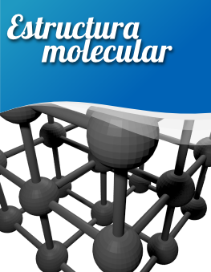
Haremos una estructura molecular cúbica. Como siempre damos por hecho que comenzamos con la escena de Blender por defecto.
- Eliminamos ("Supr") el cubo y añadimos una esfera (Añadir/Malla/Esfera UV).
- Duplicamos ("Shift_D") esa esfera y sin concluir la edición introducimos por teclado "Z" y después un número "5". Ya sabemos que esto significa que el duplicado se desplazará cinco unidades a lo largo del eje Z. Podríamos hacer primero el duplicado (Shift_D") y cerrar la edición con "Intro" o clic izquierdo, para acabar con Mover ("G") y desplazar cinco unidades sobre Z, pero no es necesario porque al duplicar se activa automáticamente la transformación Mover.
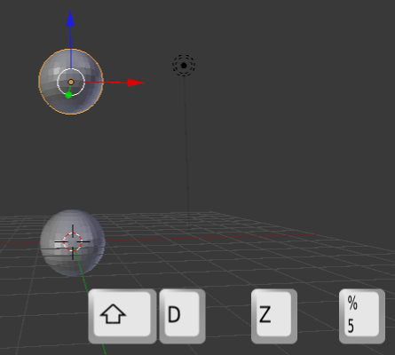
- Como el Cursor 3D está en su lugar de origen vamos a añadir un cilindro. En el caso de que el Cursor 3D no estuviera bien colocado lo arreglamos desde el cuadro Propiedades ("N"). Después desplazamos ese cilindro con el Manipulador 3D sobre el eje Z (azul) hasta situarlo entre las dos esferas.
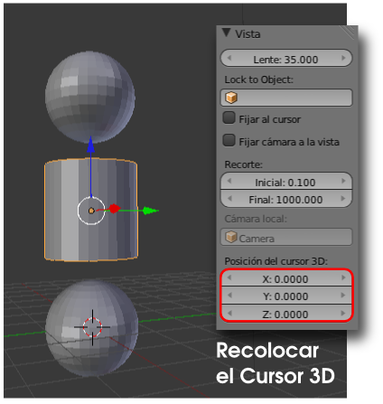
- Llega el momento de los escalados. Primero un escalado general ("S") y después otro en el que se restringe el escalado al eje Z ("SZ")
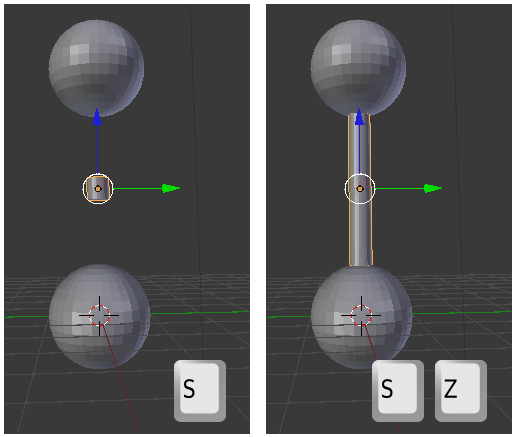
- Ahora lo que nos queda es duplicar esos tres elementos a la vez y colocar los duplicados en el sitio correcto. Por ejemplo, una vez seleccionados los tres objetos hacemos el duplicado ("Shift_D") y desplazamos en X de nuevo cinco unidades.
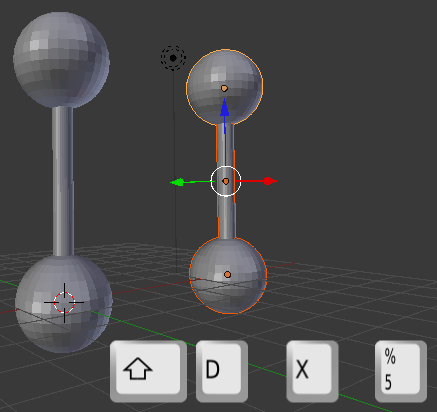
- Seleccionamos los seis objetos y repetimos exactamente igual, pero en este caso el eje para la restricción es Y.
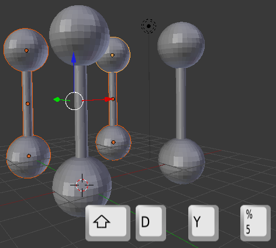
- En esta ocasión seleccionamos únicamente los cuatro cilindros para hacer el duplicado y rotar 90º en Y. La novedad aquí es que debemos anular la operación Mover y activar la de Rotar. Para ello no es necesario concluir la operación de duplicado sino que ahorramos tiempo pulsando "R" después de "Shift_D" ("Shift_D RY90")
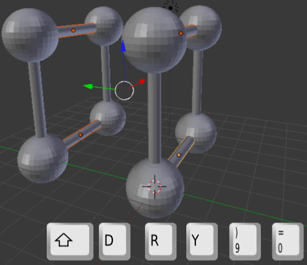
- Aprovechando que tras la edición anterior los últimos duplicados han quedado seleccionados repetimos la operación con la novedad de que ahora será el eje Z el restringido ("Shift_D RZ90")
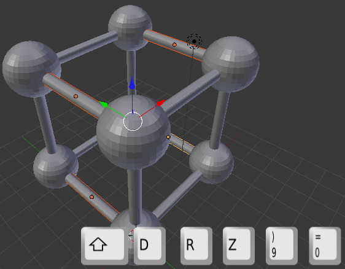
- A partir de aquí solo queda hacer duplicados y desplazarlos para obtener la estructura tan compleja como queramos.
Los siguientes duplicados
- Al continuar la estructura nunca se quedarán como definitivos objetos duplicados sobre originales. Por eso para continuar seleccionaremos los objetos que se muestran en azul en la siguiente imagen.
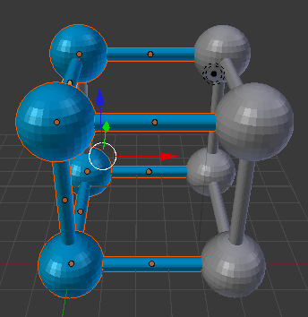
- Blender admite valores negativos y el signo "-" puede ser introducido en cualquier momento: antes del eje, después, al final del todo...
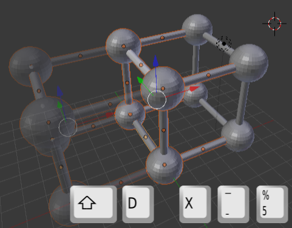
- Es muy probable que nos asalte una duda: ¿Y con esto qué hago? Más adelante, cuando concretemos asuntos sobre posición de cámara, iluminación... aprenderemos a obtener una imagen atractiva de ese modelado 3D.
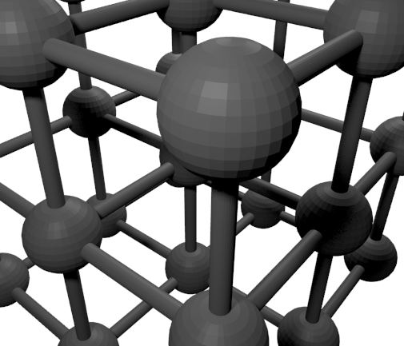